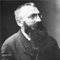

Rodin sinirli bir dahiydi. Yaşadığı dönemde pek de tanınmayan Auguste Rodin (1840–1917) günümüzde modern heykel sanatının kurucularından biri olarak görülmektedir. İki ünlü yapıtı The Thinker (Düşünen Adam) ve The Kiss (Öpücük), Batı sanatının en ünlü eserleri arasında yer almaktadır. Sayısız övgüye konu olmuş, taklitleri yapılmış ve parodileştirilmişlerdir.

Rodin klasik heykelin gerçekliğinden ayrılmış, sert ve daha az geleneksel bir tarz geliştirmiştir. Pek çok eserini bilinçli olarak yarıda bırakmıştır. Bu şekilde çalışmalarının sadece en etkileyici unsurlarını göstermekle yetinmiştir. Rodin’in tartışmalı Honoré de Balzac (1799–1850) heykelinde yazarın sadece yüzü ve kafası gözükmekte, heykelin kalan kısmı dalgalanan bir örtünün ardında gizlenmektedir.
Rodin Paris’te doğdu ve sanat okulunda okudu. Fransa’nın en önemli heykel akademisine gitmek istediyse de reddedildi. Süsleme ustası olarak çalıştı. 1870 ve 1871’de Fransız-Prusya Savaşı sırasında Fransız Ordusu’nda görev yaptı. Ardından İtalya’ya gitti. Burada inceleme fırsatı bulduğu İtalyan Rönesans sanatçıları Michelangelo (1475–1564) ve Donatello’nun (1386–1466) çalışmalarından etkilendi.
1880 yılında Paris’te açılacak bir müzenin kapısını tasarlayan Rodin ilk büyük işini aldı. Ancak üzerinde çalıştığı kapıyı asla bitiremeyecekti. Her halükarda bu proje için yaptığı çalışmalar The Thinker ve The Kiss adlı eserlerine kaynaklık etti. Başlangıçta bunlar da kapının parçaları olarak tasarlanmış ama daha sonra Rodin bağımsız eserler olmalarına karar vermişti. Bir diğer önemli eseri The Burghers of Calais (Calais Sakinleri) 1889 yılında açılmış ve Rodin’in ününü iyice arttırmıştı.
Rodin heykel sanatında yaşanan geçiş döneminin öncülerindendi. Klasisizm ve büstlerden soyut sanata geçişi simgeliyordu. Ömrünün son dönemlerine doğru dünyanın en çok tanınan heykeltıraşı haline gelmişti. Paris yakınlarındaki Meudon’da öldüğü sırada yetmiş yedi yaşındaydı.
Ek Bilgiler
1- Rodin “The Thinker”i ilk başlarda İtalyan yazar Dante’nin (1265–1321) portresi olarak tasarlamıştı. Daha sonra ise ona herhangi bir spesifik ad vermemeye karar verdi. “The Kiss” ise Dante’nin cehennemindeki Paolo ve Francesca karakterlerini simgeleyecekti. Rodin daha sonra bundan da vazgeçerek eserlerini tanımsız bırakmayı tercih etmiştir.
2- Émile Zola (1840–1902) Rodin’den Fransız Yazarlar Derneği için bir Balzac heykeli yapmasını istemişti. Ancak Rodin’in “bütün hayatımın özeti dediği” tasarımı fazla sıradışıydı. Yazarlar bu tasarımı sergilemeyi reddettiler ve bronz heykel ancak Rodin’in ölümünden sonra tamamlandı.
3- 2005 yılında ARTNews isimli yayında Rodin en çok taklit edilen on sanatçı listesine girdi. Listenin başında Fransız doğa ressamı Jean-Baptiste-Camille Corot (1796–1875) vardı. Corot taklitlerinin yapılmasını bizzat kendisi cesaretlendirmişti. Zira tanınmadıkları için sürekli kopya resimler çizmek zorunda kalan ressamların durumuna çok üzülüyordu.